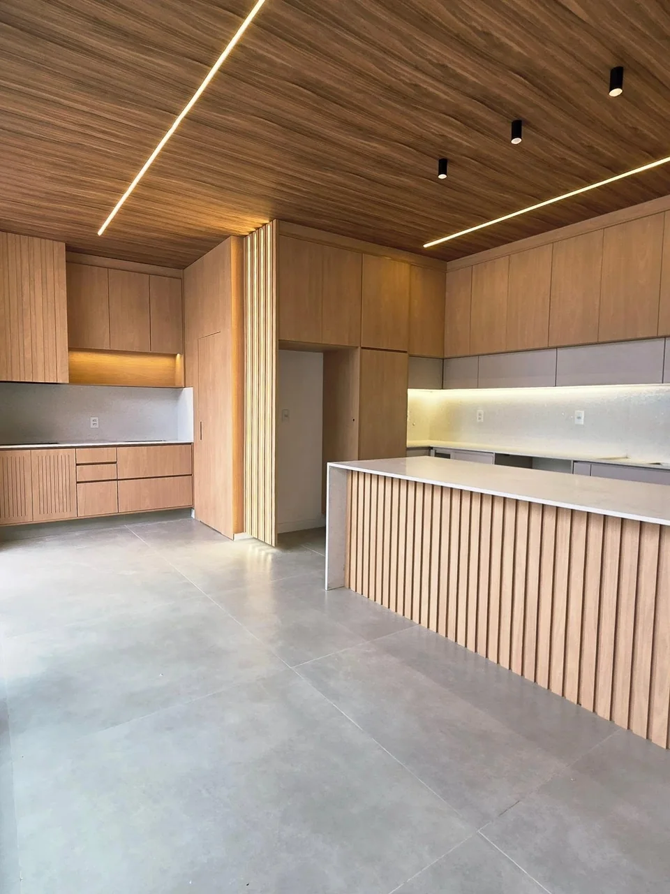
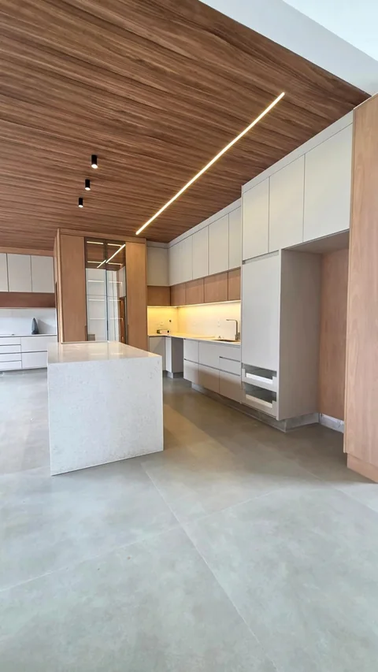
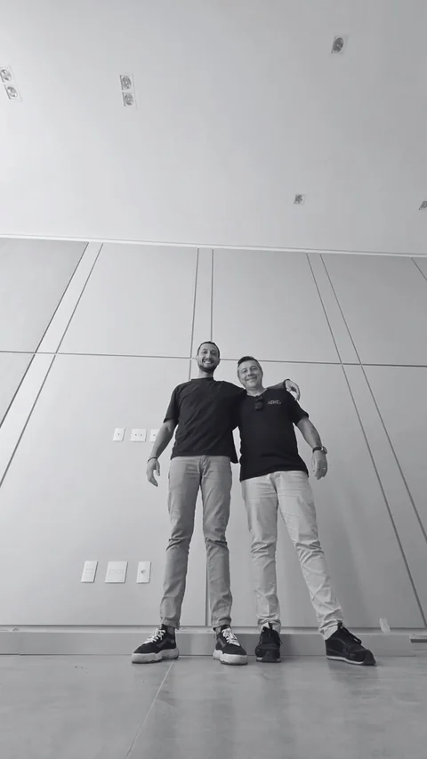

Marcenaria autoral em Indaiatuba
Móveis sob medida.Para a sua casa.
Cozinhas, closets e painéis com atendimento personalizado, produção e montagem. Da primeira conversa ao último ajuste.

Cozinha e marcenaria integradaA marcenaria
vista de perto.
Ambientes e detalhes das nossas entregas. Explore as fotos e veja como cada solução se encaixa no espaço.
Mais trabalhos no InstagramCozinha e ambiente integrado
Armários, painéis e forroCloset sob medida
Organização e iluminaçãoPainel e gabinete suspenso
Ripado e luz indiretaDetalhes que fazem diferença
Curvas, encaixes e acabamentoMarcenaria na arquitetura
Painéis e porta integrada
Transparência durante o trabalho
Você acompanha
sua marcenaria.
Depois de tantas etapas da obra, você quer saber como está a produção dos seus móveis.
Na Arko, o acompanhamento inclui fotos e atualizações por e-mail sobre produção e montagem. Uma comunicação próxima, do início à entrega.
Conversar sobre o meu projetoAtendimento personalizado.
Informação clara em cada etapa.
Como funciona
Da primeira conversa
à marcenaria pronta.
Quatro etapas para entender o que você precisa, definir o projeto e acompanhar a entrega.
Solicitar orçamento- 01
Atendimento inicial
Conversamos sobre os ambientes, suas referências e o que precisa funcionar no dia a dia. Esse briefing orienta a proposta.
- 02
Projeto e contratação
Com o escopo e a contratação definidos, começa o desenvolvimento do executivo que vai orientar a produção.
- 03
Produção e montagem
A marcenaria ganha forma. Você acompanha o andamento e as informações sobre produção e montagem.
- 04
Pós-venda
Após a entrega, seguimos em contato para dúvidas e ajustes relacionados aos móveis contratados.
A Arko Marcenaria
Um trabalho feito
por gente que se importa.
A Arko nasceu da parceria de dois amigos que conheceram de perto os desafios de contratar uma marcenaria. Dessa experiência veio a vontade de fazer diferente.
Qualidade, atendimento personalizado e transparência são os pilares que orientam o nosso trabalho, da conversa inicial ao pós-venda.
Conheça a gente pelo seu projeto
Antes de começar.
O que posso levar para a primeira conversa?
Fotos dos ambientes, medidas que você já tenha, referências e o projeto da arquitetura, se houver. Conte também o que quer mudar e o que é importante na sua rotina.
Quais ambientes aparecem no trabalho da Arko?
Cozinhas, closets, dormitórios, salas, painéis e gabinetes fazem parte do nosso repertório. Na conversa inicial, avaliamos o escopo dos ambientes que você pretende fazer.
Como acompanho a produção?
A proposta da Arko inclui atualizações por e-mail com fotos e informações sobre produção e montagem. A frequência e o acompanhamento são alinhados no atendimento.
Como são definidos o prazo e o investimento?
A proposta considera os ambientes, o detalhamento e as escolhas de materiais e acabamentos. Prazo, escopo e condições de pagamento são definidos na contratação do seu projeto.
Vamos conversar
Conte como você
imagina a sua casa.
Comece pelo ambiente que quer fazer. A gente prepara seu pedido de orçamento para você revisar e enviar por e-mail.
@arkomarcenaria